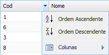
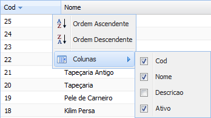
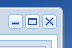
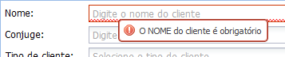

• Funcionalidades padrão do sistema
O sistema possui funcionalidades comuns a alguns tipos específicos de janelas, como as janelas de consulta.
1. Navegação de consulta
Páginas de consulta com mais de 25 registros são dividias para melhor visualização, nesse caso é necessário utilizar o navegador de consulta que fica logo abaixo da página.
Para avançar direto para a página desejada, sem precisar passar uma a uma, basta preencher o campo em branco com o número da página e clicar no botão Atualizar.
2. Ordenar campos da consulta

Todas as colunas das telas de consulta podem ser ordenadas para uma melhor visualização das informações, seja por ordem ascendente ou descendente.
Para realizar essa ordenação existem duas formas, a primeira é clicando direto no cabeçalho da coluna (no caso Cod) ou selecionando a seta (para baixo) ao lado do cabeçalho desejado e escolhendo uma das opções de ordenação.
3. Ocultar colunas

Em consultar com muitos campos é possível selecionar apenas os que interessam para pesquisa.
Para isso basta selecionar o campo desejando, clicar na seta para baixo do campo, selecionar a opção Colunas e selecionar os campos que você deseja que fiquem visíveis ou ocultos na consulta.
4. Funcionalidades das janelas

O sistema baseia suas janelas no mesmo estilo de sistemas operacionais, ou seja, é possível minimizar, maximizar e fechar as janelas utilizar os botões do canto superior direto.
Caso queira fechar a janela através de um botão de atalho, basta apertar a tecla Esc.
5. Funcionalidade de campo obrigatório

Todo cadastro tem campos obrigatório dos quais são necessário o preenchimento para ter-se o mínimo de informação necessária. Quando um desses campos não é preenchido o mesmo fica grifado em vermelho e um aviso flutuante aparecerá ao colocar o ponteiro do mouse sobre a caixa não preenchida.